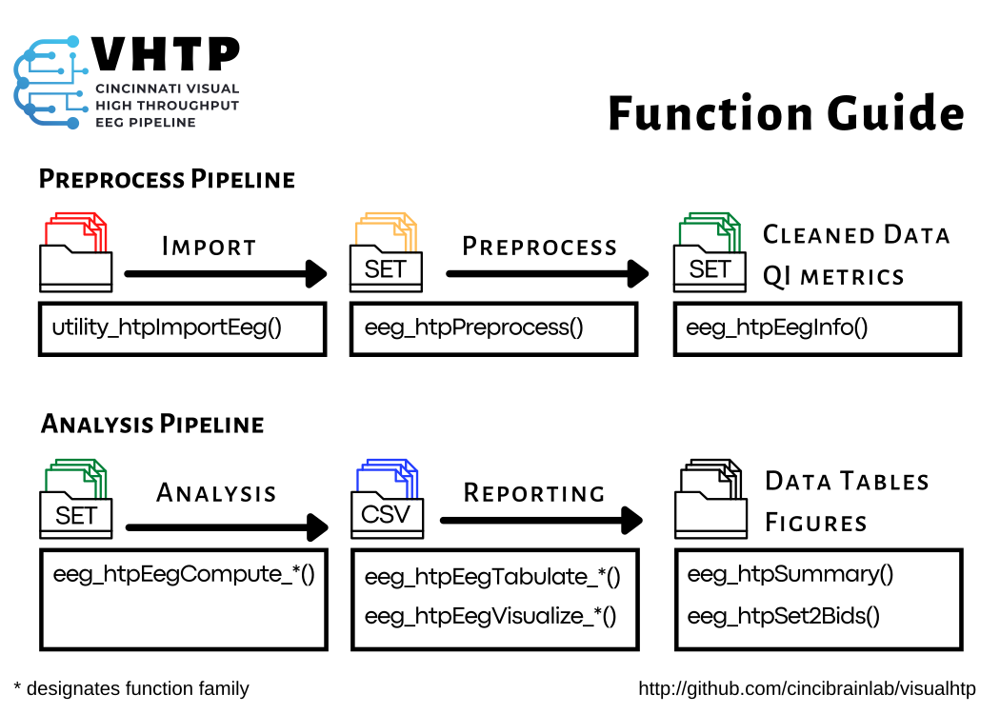

Functions

Input
Importing XDAT files into Signal FLow
- Guide to importing XDAT files into the Signal Flow system for EEG data analysis.
Remapping EEG data in XDAT files
- Process for restructuring EEG channel data within XDAT files to standardize mapping.
Preprocess
Converting epoch data to continuous data
- Steps to merge epoch-based EEG data into continuous datasets for further analysis.
Changing resample rate of eeg files
- Tutorial on adjusting the sampling rate of EEG data using EEGLAB tools.
Cleaned Data QI Metrics
Preforming FOOOF calulcations
- Guide to analyzing spectral data using FOOOF to extract oscillatory activity metrics.
Analysis
Mapping Channel Sources/Location
- Tutorial for localizing EEG channel sources and mapping spatial configurations.
Calculating Resting Spectral Power Using MATLAB
- Step-by-step instructions for analyzing resting-state spectral power in MATLAB.
Calculating Resting Spectral Power using Python MNE
- Instructions for using Python's MNE library to compute resting spectral power.
Preforming EEG comparison of HAPPE pipeline
- Methods to evaluate EEG data processed through the HAPPE pipeline.
Calculating time frequency data from EEG file
- Steps to extract time-frequency features from EEG recordings.
Calculating Inter-trial Coherence and Event-Related Spectral perturbation for Chrip files
- Guide to computing ITC and ERSP metrics for chirp-stimulated EEG data.
Graph Analysis and Brain Connectivity of EEG Channels
- Instructions for performing graph-based analysis to study brain connectivity.
Reporting
Exporting EEG data into a set file
- Process for exporting cleaned and processed EEG data into a .SET file format.
Data Tables Figures
Plotting Chirp ITC, ESPR, and STP DATA
- Tutorial on visualizing Chirp-related ITC, ERSP, and STP metrics in EEG data.